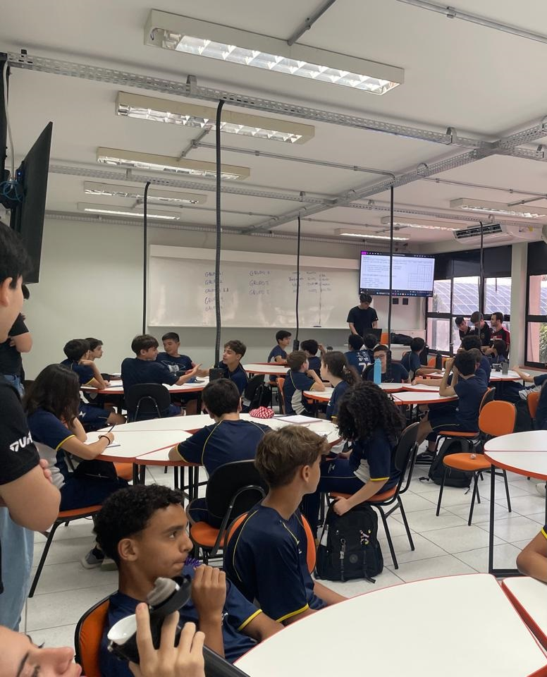

Relatório – 3
Data: 16/03/2026
Turma: 8º e 9º ano
Instrutor: Kawan
Relatório – Gincana Lógica
No dia 16/03/2026 , foi realizada a segunda aula com as turmas do 8º e 9º ano do Ensino Fundamental, como parte do projeto LondrinenseTech. O foco desta sessão foi o desenvolvimento do raciocínio analítico através da identificação de padrões numéricos e dedução lógica.
A explicação, conduzida pelo instrutor Kawan, abordou inicialmente a identificação de padrões em sequências lógicas e exponenciais. Utilizando exemplos como a progressão 2, 4, 16, 32, 64, Os alunos foram desafiados a compreender a regra matemática oculta que definia a ordem dos elementos, estimulando a percepção de potências e o crescimento lógico de conjuntos numéricos.
Após a fundamentação teórica, a aula seguiu para uma atividade prática de correlacionamento lógico. Assim como na aula anterior, os alunos foram divididos em grupos para resolver desafios de dedução. O exercício consistia em cruzar diversas afirmações para determinar, por meio da exclusão e associação, a combinação correta de fatos. Essa dinâmica visou aprimorar a capacidade de interpretação de texto e organização de pensamento estruturado.
A participação das equipes foi intensa, com os alunos demonstrando alto nível de concentração para solucionar os enigmas propostos. O formato de trabalho em grupo permitiu que os estudantes debatessem diferentes estratégias de resolução, mantendo o ambiente engajado e colaborativo.

Conclusão
A aula cumpriu seu objetivo ao transitar da lógica abstrata das sequências numéricas para a aplicação prática em problemas de dedução. A transição entre os conteúdos ajudou a demonstrar que a lógica está presente tanto em cálculos quanto na interpretação de situações cotidianas. O envolvimento dos alunos confirmou que o uso de desafios gamificados continua sendo uma estratégia eficaz para o aprendizado no projeto LondrinenseTech.